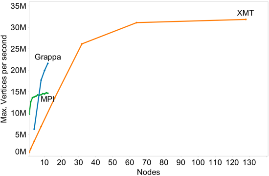

Grappa is still under development, but early results suggest we can perform well.
We ran a modified version of the Unbalanced Tree Search (UTS) benchmark in order to evaluate random access bandwidth and load balancing.
Grappa & the Cray XMT are both traversing a tree dispersed randomly through global shared memory using a parallel loop decomposition.
The MPI execution uses out-of-box UTS & traverses the tree implicitly, so there are RNG calls and work-stealing, but not remote references at every node.
The Grappa and MPI runs used our 12-node 144-core 2.66 GHz Intel Westmere system with Mellanox QDR Infiniband. The XMT run used on PNNL’s 128-processsor Cray XMT-I.
Grappa is still under development, but early results suggest we can perform well.